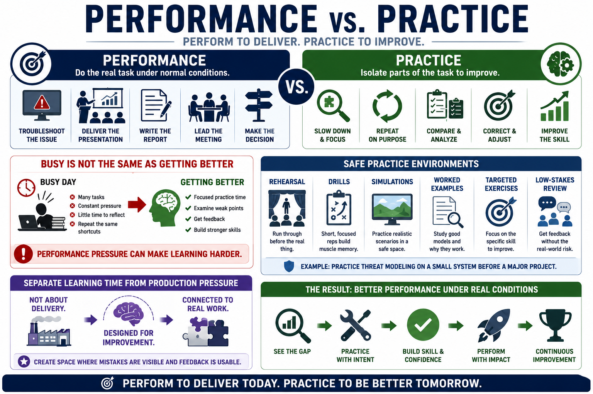

Practice Versus Performance
Connecting to LMS... Progress: in progress

Narration
Performance means doing the real task under normal conditions. You troubleshoot the production issue, deliver the presentation, write the report, lead the meeting, or make the operational decision. Practice is different. Practice isolates parts of the task so they can be improved. It creates room to slow down, repeat, compare, and correct without the full pressure of live performance.
People often confuse being busy with getting better. A busy day may include many opportunities to perform, but performance pressure can make learning harder. In production work, people are trying to finish, avoid mistakes, and meet commitments. They may not have time to examine the weak part of the skill. Practice time lets them step away from pure output and work on the mechanism behind better output.
Safe practice environments can include rehearsal, drills, simulations, worked examples, targeted exercises, and low-stakes review. A developer might practice threat modeling on a small example before doing it on a major system. A manager might rehearse a difficult conversation before the real meeting. An analyst might compare several decision records to identify where assumptions were weak.
Separating learning time from production pressure does not mean practice is artificial or irrelevant. Good practice is connected to real work, but it is designed for improvement instead of immediate delivery. The point is to create a space where mistakes are visible, feedback is usable, and the learner can repeat the critical part before the stakes are higher.